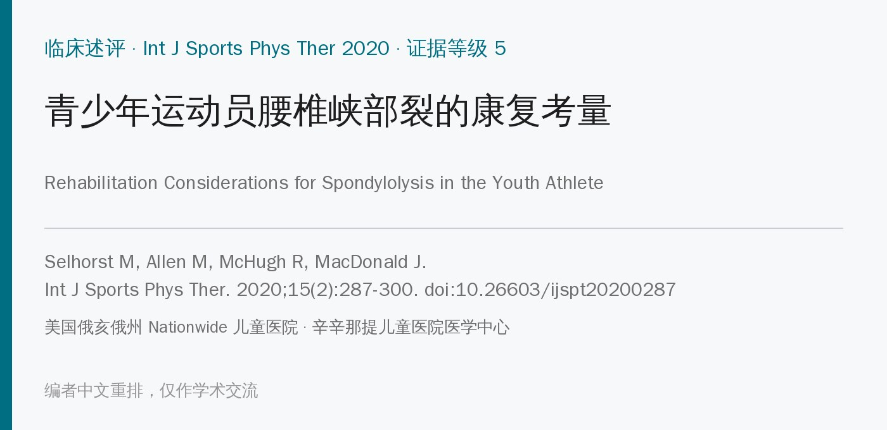
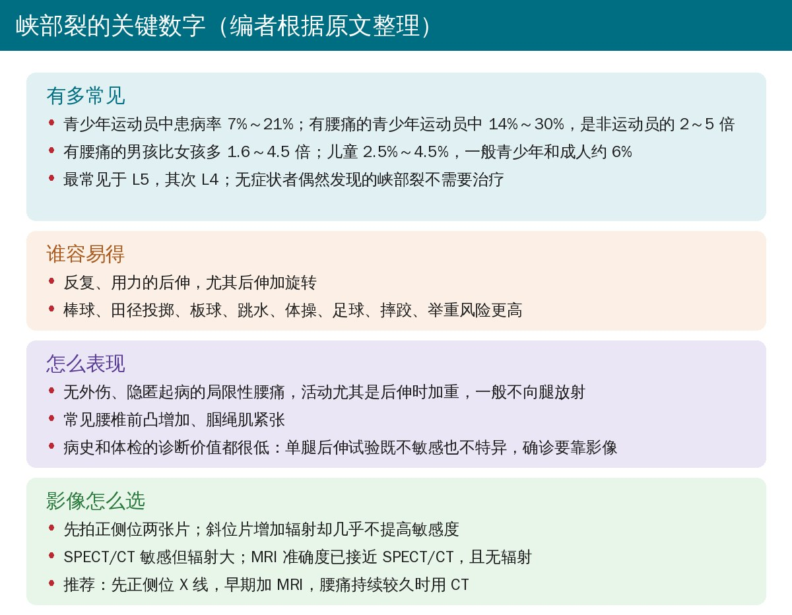
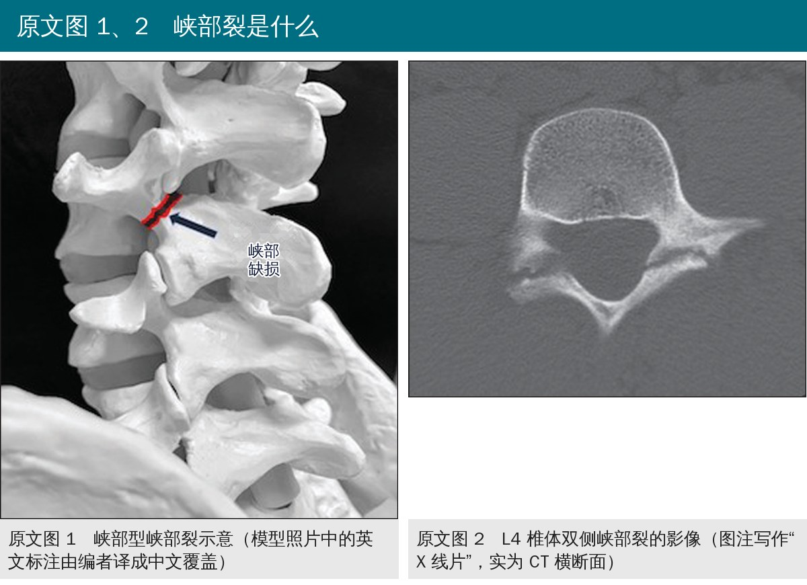
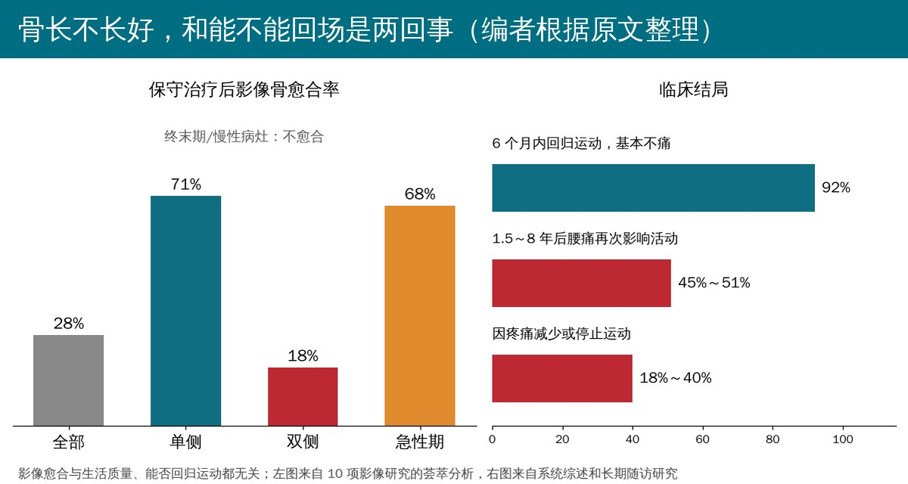
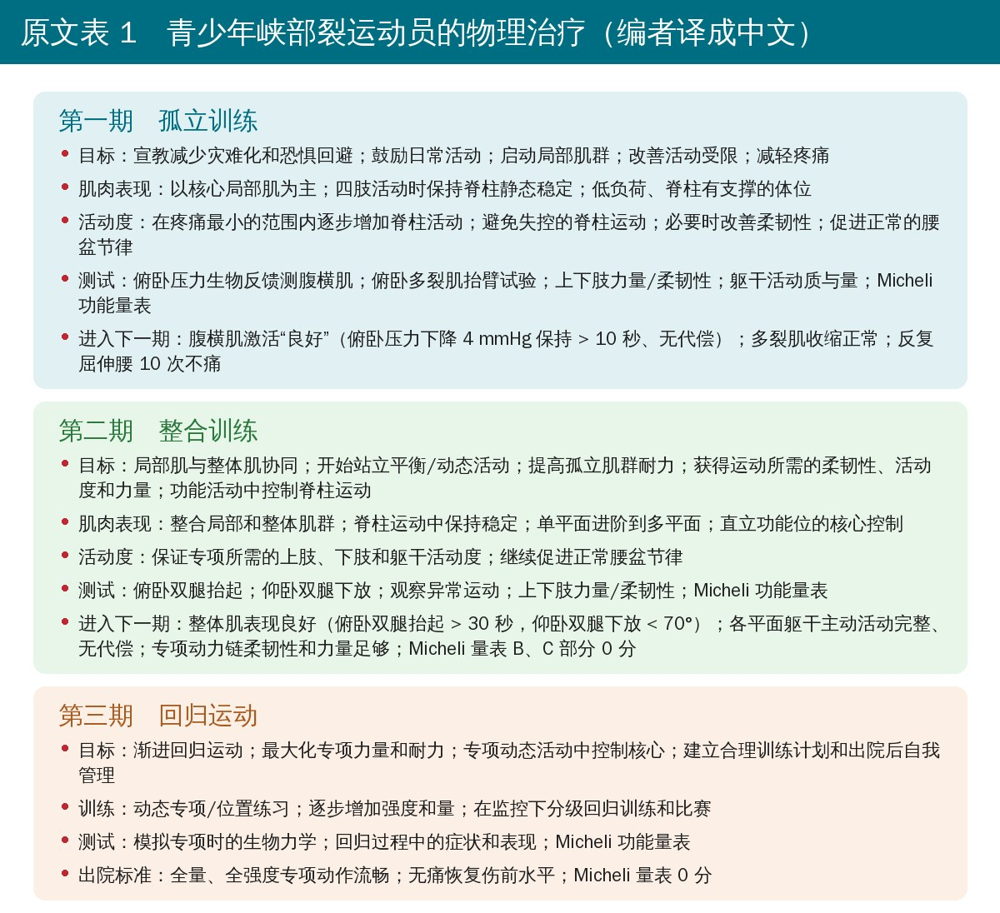
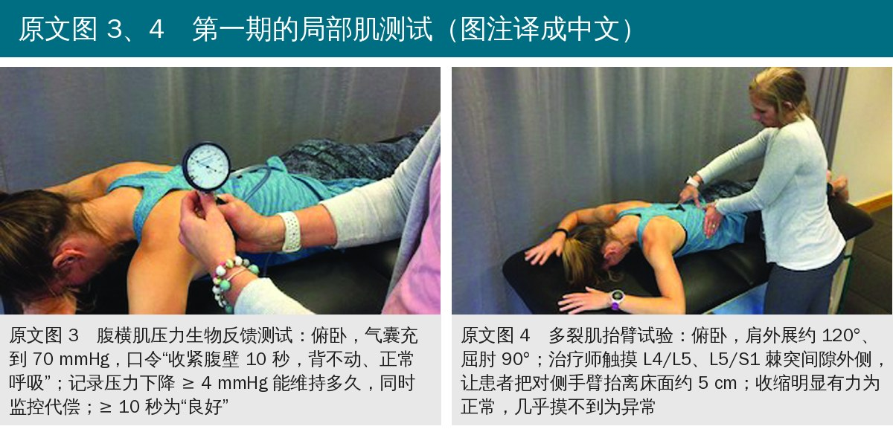
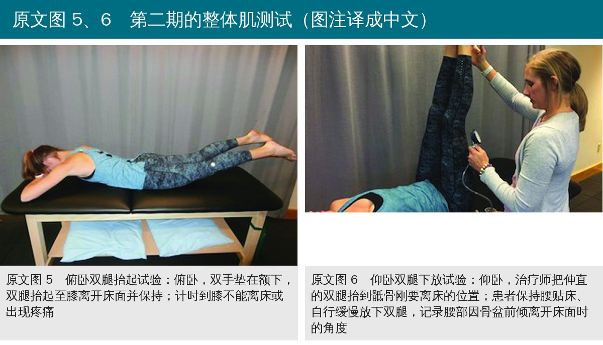
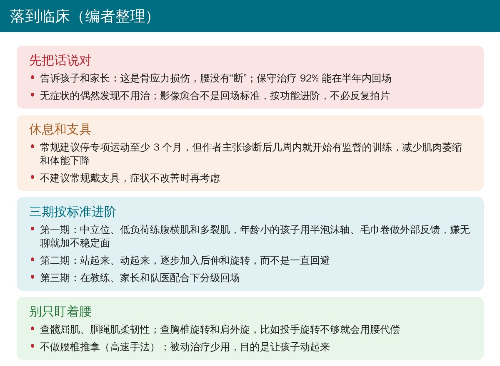

🔖原文信息（编者中文重排）
📚 文献信息
▪ Selhorst M, Allen M, McHugh R, MacDonald J. Rehabilitation considerations for spondylolysis in the youth athlete. Int J Sports Phys Ther. 2020;15(2):287-300. doi:10.26603/ijspt20200287
▪ 中文题目：青少年运动员腰椎峡部裂的康复考量
▪ 作者来自美国俄亥俄州 Nationwide 儿童医院运动与骨科物理治疗科、运动医学科，以及辛辛那提儿童医院医学中心
▪ 文章类型：临床述评（Clinical Commentary），证据等级 5
• 一半青少年有过腰痛，参加运动的更多；青少年运动员腰痛最常见的可明确病因是峡部型峡部裂，即椎弓峡部的骨应力损伤
• 以往研究集中在诊断、影像愈合、支具和休息，物理治疗虽然常被推荐，却没有一项随机对照试验，也没有详细的治疗描述
• 述评目的：简述峡部裂的病理，并详细提出一套青少年运动员峡部裂的物理治疗方案

🔖编者根据原文整理

🔖原文图 1、2（图 1 中的英文由编者译成中文覆盖）
• 这是一篇专家述评：作者结合峡部裂相关文献、成人峡部裂和腰痛的证据、腰痛临床实践指南以及自身经验，提出三期康复框架
• 按“背景 → 影像和结局指标 → 休息、支具和预后 → 心理社会因素 → 物理治疗依据 → 三期方案”的顺序展开
• 方案按标准进阶而不是按时间，每期给出目标、肌肉表现、活动度、测试和进入下一期的标准（原文表 1）
• Oswestry 和 Roland-Morris 对功能好的青少年运动员有地板效应；这些孩子日常生活很快就没问题，难的是跑、跳和专项动作
• 推荐 Micheli 功能量表（MFS）：专为青少年运动员腰痛设计，内部一致性 α = 0.90，与 Oswestry 有同时效度，但最小临床重要差值尚未确定
• 先保守：绝大多数可以保守治愈；至少 6 个月系统治疗无效才考虑手术（直接修复或间接复位加压）
• 休息：一般建议停专项运动至少 3 个月；但一项回顾性研究显示，更早开始物理治疗的患者回场更快。作者主张诊断后几周内就开始有监督的训练
• 支具：荟萃分析显示支具不影响临床结局，也不能预测长期运动参与、复发或主观结局；作者不建议常规使用，留给症状不改善的患者
• 预后：保守治疗后 92% 能在 6 个月内回场且基本不痛；但 1.5～8 年随访中 45%～51% 腰痛再次影响活动，18%～40% 因疼痛减少或停止运动
• 骨愈合：荟萃分析中只有 28% 的病灶影像愈合，单侧 71%、双侧 18%，急性期 68%，终末期不愈合；而影像愈合与生活质量和回场都无关，反应良好的患者不建议复查影像

🔖编者根据原文整理
• 孩子常要停赛数月，可能出现失落、自尊下降、焦虑、挫败、孤立和抑郁；良好的医患沟通本身就是社会支持
• 孩子容易把自己的腰理解成“断了”，增加对活动和再受伤的恐惧；要告诉他们这是骨应力损伤，腰没有断，并强调完全回场的可能性很高
• 峡部裂会造成节段性不稳（平移和旋转增加）；一项成人峡部裂/滑脱的随机对照试验中，针对深层腹肌和多裂肌的训练优于一般训练
• 三个原则：第一，这是正在愈合的骨应力损伤，第一期在静态中立位练；第二，症状改善后要主动练后伸和旋转，而不是一直回避，因为专项离不开这些动作；第三，运动员用的是全身，其他部位的问题会增加腰椎负荷
• 躯干肌分为负责节段稳定的局部肌系统和负责产生动作的整体肌系统（原文表 2）

🔖原文表 1（编者译成中文）
• 第一期·孤立训练：先建立“活动有益”的信念；中立位、无痛范围内练局部肌，逐步加上四肢活动；年龄小的孩子可用半泡沫轴或毛巾卷放在背上或腹部做外部反馈，嫌简单就加不稳定面；被动治疗少用，不做腰椎高速推拿
• 第一期也要查髋屈肌和腘绳肌柔韧性，拉伸时保持脊柱中立；还要找专项中的其他问题，比如投手胸椎旋转和肩外旋不足会让腰代偿
• 第一期出期：腹横肌压力生物反馈“良好”、多裂肌抬臂试验收缩正常、反复屈伸腰无痛；用倾角计测腰椎活动度应达正常
• 第二期·整合训练：从有支撑的静态体位进阶到无支撑、直立、多平面的动态练习，包括末端范围的脊柱运动；加入离心力量和发力训练，不忘髋、肩胛胸壁和肩部力量
• 第二期出期：俯卧双腿抬起 > 30 秒、仰卧双腿下放 < 70°、侧桥计时，各方向腰椎活动无痛，MFS 的 B、C 部分接近 0 分
• 第三期·回归运动：在家长、教练和队医配合下分级回归训练和比赛；提高有氧能力、耐力和专项力量；每周 1～2 小时的治疗远不够，要建立出院后的训练和自我管理
• 出院标准：全量全强度专项动作流畅、无痛恢复伤前水平、MFS 0 分

🔖原文图 3、4（照片为原图，图注编者译成中文）

🔖原文图 5、6（照片为原图，图注编者译成中文）
• 峡部裂保守治疗的证据在增加，物理治疗也常被推荐，这篇述评为分期实施物理治疗提供了急需的指导
• 作者坦言，建议主要基于专家意见和从相似人群推广的研究，但能帮助建立安全有效的治疗方法，也可作为今后研究的框架
• 证据等级 5：专家述评，没有系统检索，方案本身没有经过试验验证
• 核心依据来自成人：“练深层肌优于一般训练”来自一项成人慢性腰痛合并峡部裂/滑脱的随机对照试验，青少年急性峡部裂是否同样适用并不确定
• “早开始训练”证据薄弱：依据是作者团队自己的一项回顾性病历研究，有选择偏倚
• 出期标准多为经验值：俯卧双腿抬起 > 30 秒、仰卧双腿下放 < 70° 等阈值正文没有给出处；MFS 的最小临床重要差值也未确定
• 实用价值高：不按时间、按功能标准进阶，把宣教、心理和全身动力链都纳入，和当前青少年运动损伤康复的思路一致
• 表 2 的出处标错了：表 2 标注“改编自 Hoogenboom 和 Kiesel³¹”，但文献 31 是 Kobayashi 等的 MRI 诊断研究，Hoogenboom 和 Kiesel 是文献 85
• 腹横肌“良好”标准的出处：正文把“4 mmHg 下降保持至少 10 秒”引自文献 72，而文献 72 是关于儿童正常和峡部裂脊柱运动瞬时旋转轴的研究
• “> 10 秒”还是“≥ 10 秒”：表 1 写“> 10 秒”，图 3 说明写“10 秒或以上”
• 图 2 不是 X 线片：图注写“radiographic image”，但图像是 CT 横断面
• 仰卧双腿下放 < 70° 的量法没说清：图 6 说明记录腰离床时的位置，但没说明角度是腿与床面还是与垂直线的夹角
• 表 2 有肌肉两边都列：腰大肌（后部/前部）、髋旋转肌和髋外展肌同时出现在局部和整体两栏，作者用星号注明存在争议
• 休息建议前后有张力：一边说“建议停专项至少 3 个月”，一边主张诊断后几周内就开始训练；两者并不矛盾（停专项不等于不训练），但原文没有说明训练期间专项要停多久

🔖编者整理
• 怀疑就拍片：青少年运动员后伸加重的局限性腰痛，体检分不出来，先正侧位 X 线，早期加 MRI
• 第一次见面先做宣教：腰没有断、预后好、要保持活动，减少恐惧回避
• 不必等骨愈合：按功能标准进阶，单侧、急性期更可能愈合，但愈合与否不决定能否回场
• 第一期就测、按测进阶：压力生物反馈测腹横肌，多裂肌抬臂试验，再到俯卧双腿抬起、仰卧双腿下放和侧桥
• 后伸和旋转要练回来：第二期起逐步加入，配合髋、胸椎和肩的活动度和力量，减少专项中腰椎的代偿
• 长期随访：近一半在数年内会复发，出院时要给好自我训练计划，并和教练、家长沟通训练量
表 1 青少年峡部裂运动员的物理治疗
| 项目 | 第一期 孤立训练 | 第二期 整合训练 | 第三期 回归运动训练 |
|---|---|---|---|
| 目标 | 1. 宣教，减少灾难化和恐惧回避信念 2. 鼓励参与日常生活活动 3. 启动局部肌系统 4. 改善活动受限 5. 减轻疼痛 | 1. 整合局部肌与整体肌系统 2. 开始站立平衡/动态活动 3. 提高孤立肌群的耐力 4. 获得满足运动需求的柔韧性/活动度和力量 5. 促进功能活动中可控的脊柱运动 | 1. 渐进回归运动 2. 最大化专项力量和耐力 3. 保证专项动态活动中的核心控制 4. 建立合理的训练计划和出院后的自我管理 |
| 肌肉表现 | · 以核心局部肌为主 · 四肢活动时保持脊柱静态稳定 · 低负荷、脊柱有支撑的体位 | · 整合局部和整体肌群 · 脊柱运动中保持稳定 · 单平面进阶到多平面 · 直立功能位的核心控制 | · 动态专项/位置练习 · 专项训练逐步增加强度和量 · 在监控下分级回归训练和比赛 |
| 活动度 | · 在疼痛最小的范围内逐步增加脊柱活动 · 避免失控的脊柱运动 · 必要时改善柔韧性 · 促进正常的腰盆节律 | · 保证专项所需的上肢、下肢和躯干活动度及柔韧性 · 继续促进正常的腰盆节律 | （与上栏合并） |
| 测试/评估 | · 腹横肌激活（俯卧压力生物反馈） · 俯卧多裂肌抬臂试验 · 上下肢力量/柔韧性 · 躯干活动（质和量） · Micheli 功能量表 | · 俯卧双腿抬起 · 仰卧双腿下放 · 观察异常运动（必要时） · 上下肢力量/柔韧性 · Micheli 功能量表 | · 模拟专项时的生物力学 · 回归过程中的症状和表现 · Micheli 功能量表 |
| 进入下一期的标准 | 1. 腹横肌激活“良好”、无代偿：俯卧压力生物反馈下降 4 mmHg 保持 > 10 秒 2. 俯卧多裂肌抬臂试验收缩正常 3. 反复屈伸腰椎无痛（10 次） | 1. 整体肌表现良好（俯卧双腿抬起 > 30 秒，仰卧双腿下放 < 70°） 2. 各平面躯干主动活动完整、无代偿 3. 专项动力链的柔韧性/活动度和力量足够 4. Micheli 功能量表 B、C 部分 0 分 | 出院标准： 1. 全量、全强度专项动作中力学流畅 2. 无痛恢复伤前竞技水平 3. Micheli 功能量表 0 分 |
注：缩写 ROM 活动度；UE 上肢；LE 下肢；TA 腹横肌；MT 多裂肌。原表第二、三期的“肌肉表现”和“活动度”两行在第三期合并为一格。
表 2 核心的局部肌系统和整体肌系统（原文标注改编自 Hoogenboom 和 Kiesel）
| 局部肌系统 | 整体肌系统 |
|---|---|
| 多裂肌 | 腹直肌 |
| 腹横肌 | 腹外斜肌 |
| 腰方肌（内侧部） | 腹内斜肌（前部纤维） |
| 膈肌 | 最长肌和髂肋肌（胸段） |
| 腹内斜肌（后部纤维） | 腰方肌（外侧部） |
| 横突间肌和棘间肌 | 背阔肌 |
| 髂肋肌和最长肌（腰段） | 髂肌 |
| 腰大肌（后部） | 腰大肌（前部） |
| 髋旋转肌* | 髋伸肌和内收肌 |
| 髋外展肌* | 腘绳肌和股四头肌 |
| 髋旋转肌* | |
| 髋外展肌* |
注：* 这些肌肉属于局部还是整体肌系统存在争议。
欢迎关注骨科康复小黄公众号，获取更多物理治疗的专业知识！
📄参考文献：
Selhorst M, Allen M, McHugh R, MacDonald J. Rehabilitation considerations for spondylolysis in the youth athlete. Int J Sports Phys Ther. 2020;15(2):287-300. doi:10.26603/ijspt20200287
本文为中文解读，仅作学术交流：照片引自原文图 1～图 6（图 1 中的英文由编者译成中文覆盖原位置，图注由编者译成中文），表 1 中文卡、关键数字卡、预后图和临床卡为编者根据原文整理，表格为编者翻译。原文版权归原作者和 International Journal of Sports Physical Therapy 所有。